| Matrix name | Aligned logos | cor |
Ncor |
logoDP |
NIcor |
NsEucl |
SSD |
NSW |
rcor |
rNcor |
rlogoDP |
rNIcor |
rNsEucl |
rSSD |
rNSW |
rank_mean |
match_rank |
Aligned matrices |
|---|
| dyads_m4_shift7 (dyads_m4) |
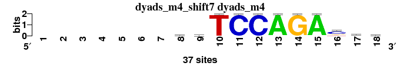 |
|
|
|
|
|
|
|
|
|
|
|
|
|
|
|
|
; dyads_m4; m=0 (reference); ncol1=11; shift=7; ncol=18; -------ymTCCAGAccr
; Alignment reference
a 0 0 0 0 0 0 0 5 11 0 0 0 37 0 37 1 9 12
c 0 0 0 0 0 0 0 12 11 0 37 37 0 0 0 22 15 6
g 0 0 0 0 0 0 0 7 6 0 0 0 0 37 0 8 4 12
t 0 0 0 0 0 0 0 13 9 37 0 0 0 0 0 6 9 7
|
| 1921_PB0060.1_JASPAR_CORE_2009__shift5 (1921_PB0060.1_JASPAR_CORE_2009_) |
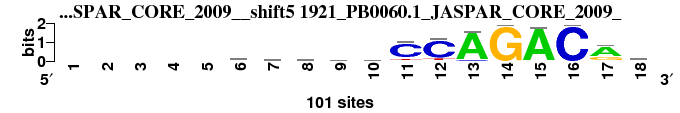 |
0.832 |
0.538 |
6.936 |
0.529 |
0.921 |
1.508 |
0.931 |
7 |
5 |
4 |
2 |
1 |
10 |
5 |
4.857 |
1 |
; dyads_m4 versus 1921_PB0060.1_JASPAR_CORE_2009_; m=1/16; ncol2=17; w=11; offset=-2; strand=D; shift=5; score= 4.8571; -----mdwatCCAGACrk
; cor=0.832; Ncor=0.538; logoDP=6.936; NIcor=0.529; NsEucl=0.921; SSD=1.508; NSW=0.931; rcor=7; rNcor=5; rlogoDP=4; rNIcor=2; rNsEucl=1; rSSD=10; rNSW=5; rank_mean=4.857; match_rank=1
a 0 0 0 0 0 28 34 40 37 24 3 0 93 1 97 1 67 13
c 0 0 0 0 0 41 14 17 20 18 81 82 6 0 2 98 1 17
g 0 0 0 0 0 11 27 17 21 22 4 4 1 99 0 0 28 33
t 0 0 0 0 0 19 26 26 23 35 13 14 0 0 1 0 4 36
|
| 3697_UP00000_UniPROBE_20120919__shift5 (3697_UP00000_UniPROBE_20120919_) |
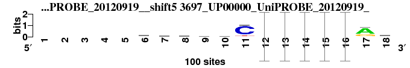 |
0.832 |
0.538 |
6.960 |
0.529 |
0.921 |
1.509 |
0.931 |
8 |
6 |
3 |
1 |
2 |
11 |
6 |
5.286 |
2 |
; dyads_m4 versus 3697_UP00000_UniPROBE_20120919_; m=2/16; ncol2=17; w=11; offset=-2; strand=D; shift=5; score= 5.2857; -----mdwawCCAGACrk
; cor=0.832; Ncor=0.538; logoDP=6.960; NIcor=0.529; NsEucl=0.921; SSD=1.509; NSW=0.931; rcor=8; rNcor=6; rlogoDP=3; rNIcor=1; rNsEucl=2; rSSD=11; rNSW=6; rank_mean=5.286; match_rank=2
a 0 0 0 0 0 29 34 40 37 25 3 0 0.93 0.01 0.97 0.01 67 13
c 0 0 0 0 0 41 14 17 20 18 81 0.82 0.06 0 0.02 0.98 1 17
g 0 0 0 0 0 11 26 17 21 22 4 0.04 0.01 0.99 0 0 28 34
t 0 0 0 0 0 19 26 26 22 35 12 0.14 0 0 0.01 0 4 36
|
| 2481_MA0092.1_JASPAR_CORE_2009__rc_shift7 (2481_MA0092.1_JASPAR_CORE_2009__rc) |
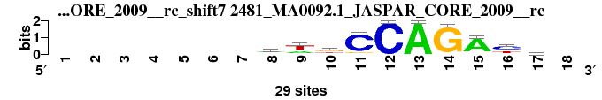 |
0.846 |
0.769 |
3.725 |
0.338 |
0.918 |
1.359 |
0.932 |
4 |
1 |
10 |
9 |
4 |
9 |
4 |
5.857 |
3 |
; dyads_m4 versus 2481_MA0092.1_JASPAR_CORE_2009__rc; m=3/16; ncol2=10; w=10; offset=0; strand=R; shift=7; score= 5.8571; -------awkCCAGAys-
; cor=0.846; Ncor=0.769; logoDP=3.725; NIcor=0.338; NsEucl=0.918; SSD=1.359; NSW=0.932; rcor=4; rNcor=1; rlogoDP=10; rNIcor=9; rNsEucl=4; rSSD=9; rNSW=4; rank_mean=5.857; match_rank=3
a 0 0 0 0 0 0 0 16 10 5 1 0 29 1 24 4 7 0
c 0 0 0 0 0 0 0 4 3 1 25 29 0 0 1 15 10 0
g 0 0 0 0 0 0 0 4 0 14 3 0 0 28 2 0 8 0
t 0 0 0 0 0 0 0 5 16 9 0 0 0 0 2 10 4 0
|
| 7423_HAND1_si_HOCOMOCO_v9__rc_shift6 (7423_HAND1_si_HOCOMOCO_v9__rc) |
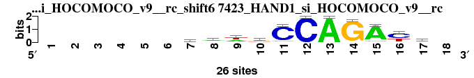 |
0.860 |
0.717 |
0.284 |
-0.134 |
0.921 |
1.249 |
0.938 |
3 |
2 |
15 |
15 |
3 |
6 |
3 |
6.714 |
4 |
; dyads_m4 versus 7423_HAND1_si_HOCOMOCO_v9__rc; m=4/16; ncol2=11; w=10; offset=-1; strand=R; shift=6; score= 6.7143; ------aawkCCAGAyv-
; cor=0.860; Ncor=0.717; logoDP=0.284; NIcor=-0.134; NsEucl=0.921; SSD=1.249; NSW=0.938; rcor=3; rNcor=2; rlogoDP=15; rNIcor=15; rNsEucl=3; rSSD=6; rNSW=3; rank_mean=6.714; match_rank=4
a 0 0 0 0 0 0 13 14 10 5 1 0 26 0 23 1 7 0
c 0 0 0 0 0 0 4 4 2 1 23 26 0 1 1 15 9 0
g 0 0 0 0 0 0 5 3 1 11 2 0 0 25 2 0 9 0
t 0 0 0 0 0 0 4 5 13 9 0 0 0 0 0 10 1 0
|
| 1711_MA0152.1_JASPAR_CORE_2009__shift6 (1711_MA0152.1_JASPAR_CORE_2009_) |
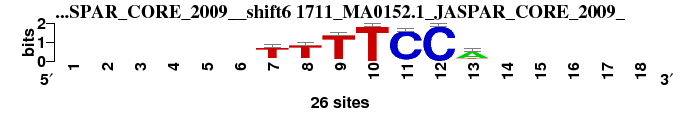 |
0.840 |
0.420 |
5.947 |
0.398 |
0.879 |
1.050 |
0.913 |
5 |
12 |
5 |
8 |
10 |
3 |
7 |
7.143 |
5 |
; dyads_m4 versus 1711_MA0152.1_JASPAR_CORE_2009_; m=5/16; ncol2=7; w=6; offset=-1; strand=D; shift=6; score= 7.1429; ------TTTTCCA-----
; cor=0.840; Ncor=0.420; logoDP=5.947; NIcor=0.398; NsEucl=0.879; SSD=1.050; NSW=0.913; rcor=5; rNcor=12; rlogoDP=5; rNIcor=8; rNsEucl=10; rSSD=3; rNSW=7; rank_mean=7.143; match_rank=5
a 0 0 0 0 0 0 3 1 1 0 1 0 18 0 0 0 0 0
c 0 0 0 0 0 0 1 2 1 0 25 26 3 0 0 0 0 0
g 0 0 0 0 0 0 2 2 0 0 0 0 1 0 0 0 0 0
t 0 0 0 0 0 0 20 21 24 26 0 0 4 0 0 0 0 0
|
| 6130_1imh_C_3D-footprint_20130124__rc_shift8 (6130_1imh_C_3D-footprint_20130124__rc) |
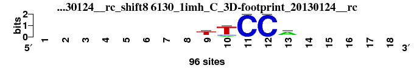 |
0.918 |
0.417 |
0.358 |
-0.024 |
0.902 |
0.477 |
0.952 |
1 |
13 |
14 |
13 |
6 |
2 |
2 |
7.286 |
6 |
; dyads_m4 versus 6130_1imh_C_3D-footprint_20130124__rc; m=6/16; ncol2=5; w=5; offset=1; strand=R; shift=8; score= 7.2857; --------tTCCa-----
; cor=0.918; Ncor=0.417; logoDP=0.358; NIcor=-0.024; NsEucl=0.902; SSD=0.477; NSW=0.952; rcor=1; rNcor=13; rlogoDP=14; rNIcor=13; rNsEucl=6; rSSD=2; rNSW=2; rank_mean=7.286; match_rank=6
a 0 0 0 0 0 0 0 0 10 10 0 0 64 0 0 0 0 0
c 0 0 0 0 0 0 0 0 12 12 96 96 12 0 0 0 0 0
g 0 0 0 0 0 0 0 0 10 0 0 0 10 0 0 0 0 0
t 0 0 0 0 0 0 0 0 64 74 0 0 10 0 0 0 0 0
|
| 6074_1gji_A_3D-footprint_20130124__rc_shift8 (6074_1gji_A_3D-footprint_20130124__rc) |
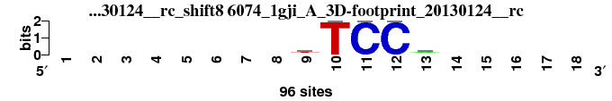 |
0.918 |
0.417 |
0.121 |
-0.063 |
0.902 |
0.477 |
0.952 |
2 |
14 |
16 |
14 |
5 |
1 |
1 |
7.571 |
7 |
; dyads_m4 versus 6074_1gji_A_3D-footprint_20130124__rc; m=7/16; ncol2=5; w=5; offset=1; strand=R; shift=8; score= 7.5714; --------kTCCr-----
; cor=0.918; Ncor=0.417; logoDP=0.121; NIcor=-0.063; NsEucl=0.902; SSD=0.477; NSW=0.952; rcor=2; rNcor=14; rlogoDP=16; rNIcor=14; rNsEucl=5; rSSD=1; rNSW=1; rank_mean=7.571; match_rank=7
a 0 0 0 0 0 0 0 0 12 0 0 0 48 0 0 0 0 0
c 0 0 0 0 0 0 0 0 12 0 96 96 12 0 0 0 0 0
g 0 0 0 0 0 0 0 0 24 0 0 0 24 0 0 0 0 0
t 0 0 0 0 0 0 0 0 48 96 0 0 12 0 0 0 0 0
|
| 7686_UBIP1_f1_HOCOMOCO_v9__shift11 (7686_UBIP1_f1_HOCOMOCO_v9_) |
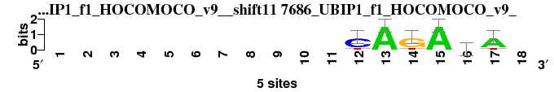 |
0.809 |
0.441 |
5.844 |
0.468 |
0.872 |
1.176 |
0.902 |
9 |
10 |
6 |
5 |
12 |
5 |
9 |
8.000 |
8 |
; dyads_m4 versus 7686_UBIP1_f1_HOCOMOCO_v9_; m=8/16; ncol2=6; w=6; offset=4; strand=D; shift=11; score= 8; -----------CAGArA-
; cor=0.809; Ncor=0.441; logoDP=5.844; NIcor=0.468; NsEucl=0.872; SSD=1.176; NSW=0.902; rcor=9; rNcor=10; rlogoDP=6; rNIcor=5; rNsEucl=12; rSSD=5; rNSW=9; rank_mean=8.000; match_rank=8
a 0 0 0 0 0 0 0 0 0 0 0 0 5 0 5 2 4 0
c 0 0 0 0 0 0 0 0 0 0 0 4 0 0 0 0 0 0
g 0 0 0 0 0 0 0 0 0 0 0 0 0 4 0 2 0 0
t 0 0 0 0 0 0 0 0 0 0 0 1 0 1 0 1 1 0
|
| 6322_1svc_P_3D-footprint_20130124__shift6 (6322_1svc_P_3D-footprint_20130124_) |
|
0.805 |
0.402 |
5.817 |
0.403 |
0.877 |
1.092 |
0.909 |
10 |
16 |
7 |
7 |
11 |
4 |
8 |
9.000 |
9 |
; dyads_m4 versus 6322_1svc_P_3D-footprint_20130124_; m=9/16; ncol2=7; w=6; offset=-1; strand=D; shift=6; score= 9; ------gnnTCCc-----
; cor=0.805; Ncor=0.402; logoDP=5.817; NIcor=0.403; NsEucl=0.877; SSD=1.092; NSW=0.909; rcor=10; rNcor=16; rlogoDP=7; rNIcor=7; rNsEucl=11; rSSD=4; rNSW=8; rank_mean=9.000; match_rank=9
a 0 0 0 0 0 0 13 24 24 0 0 0 16 0 0 0 0 0
c 0 0 0 0 0 0 16 24 24 0 96 96 54 0 0 0 0 0
g 0 0 0 0 0 0 54 24 24 0 0 0 13 0 0 0 0 0
t 0 0 0 0 0 0 13 24 24 96 0 0 13 0 0 0 0 0
|
| 7623_SMAD4_si_HOCOMOCO_v9__rc_shift8 (7623_SMAD4_si_HOCOMOCO_v9__rc) |
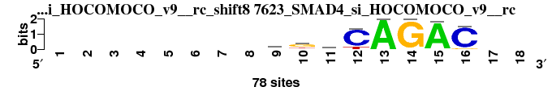 |
0.801 |
0.582 |
4.026 |
0.195 |
0.885 |
1.702 |
0.894 |
11 |
4 |
9 |
10 |
9 |
12 |
11 |
9.429 |
10 |
; dyads_m4 versus 7623_SMAD4_si_HOCOMOCO_v9__rc; m=10/16; ncol2=8; w=8; offset=1; strand=R; shift=8; score= 9.4286; --------rkmCAGAC--
; cor=0.801; Ncor=0.582; logoDP=4.026; NIcor=0.195; NsEucl=0.885; SSD=1.702; NSW=0.894; rcor=11; rNcor=4; rlogoDP=9; rNIcor=10; rNsEucl=9; rSSD=12; rNSW=11; rank_mean=9.429; match_rank=10
a 0 0 0 0 0 0 0 0 25 5 22 0 78 0 76 1 0 0
c 0 0 0 0 0 0 0 0 10 9 31 65 0 0 0 71 0 0
g 0 0 0 0 0 0 0 0 33 44 17 0 0 78 2 6 0 0
t 0 0 0 0 0 0 0 0 10 20 8 13 0 0 0 0 0 0
|
| 7622_SMAD3_f1_HOCOMOCO_v9__rc_shift8 (7622_SMAD3_f1_HOCOMOCO_v9__rc) |
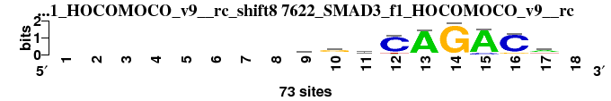 |
0.782 |
0.640 |
2.851 |
0.185 |
0.893 |
1.848 |
0.897 |
12 |
3 |
11 |
11 |
8 |
13 |
10 |
9.714 |
11 |
; dyads_m4 versus 7622_SMAD3_f1_HOCOMOCO_v9__rc; m=11/16; ncol2=9; w=9; offset=1; strand=R; shift=8; score= 9.7143; --------rgcCAGACa-
; cor=0.782; Ncor=0.640; logoDP=2.851; NIcor=0.185; NsEucl=0.893; SSD=1.848; NSW=0.897; rcor=12; rNcor=3; rlogoDP=11; rNIcor=11; rNsEucl=8; rSSD=13; rNSW=10; rank_mean=9.714; match_rank=11
a 0 0 0 0 0 0 0 0 25 7 18 5 67 1 66 2 41 0
c 0 0 0 0 0 0 0 0 12 10 32 60 1 0 7 63 7 0
g 0 0 0 0 0 0 0 0 29 40 15 0 2 72 0 7 9 0
t 0 0 0 0 0 0 0 0 7 16 8 8 3 0 0 1 16 0
|
| 2553_MA0292.1_JASPAR_CORE_2009__shift8 (2553_MA0292.1_JASPAR_CORE_2009_) |
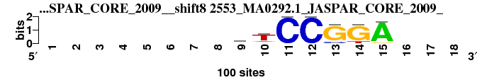 |
0.765 |
0.487 |
6.968 |
0.500 |
0.860 |
1.933 |
0.862 |
14 |
7 |
2 |
3 |
15 |
14 |
15 |
10.000 |
12 |
; dyads_m4 versus 2553_MA0292.1_JASPAR_CORE_2009_; m=12/16; ncol2=7; w=7; offset=1; strand=D; shift=8; score= 10; --------hTCCGGA---
; cor=0.765; Ncor=0.487; logoDP=6.968; NIcor=0.500; NsEucl=0.860; SSD=1.933; NSW=0.862; rcor=14; rNcor=7; rlogoDP=2; rNIcor=3; rNsEucl=15; rSSD=14; rNSW=15; rank_mean=10.000; match_rank=12
a 0 0 0 0 0 0 0 0 28 14 0 0 0 0 93 0 0 0
c 0 0 0 0 0 0 0 0 36 7 100 100 14 0 0 0 0 0
g 0 0 0 0 0 0 0 0 7 7 0 0 86 86 7 0 0 0
t 0 0 0 0 0 0 0 0 28 71 0 0 0 14 0 0 0 0
|
| 2742_PF0055.1_JASPAR_CORE_2009__rc_shift7 (2742_PF0055.1_JASPAR_CORE_2009__rc) |
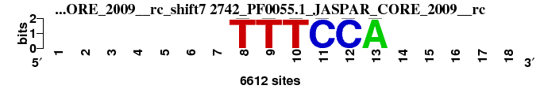 |
0.836 |
0.456 |
1.961 |
0.003 |
0.863 |
1.356 |
0.887 |
6 |
9 |
12 |
12 |
14 |
8 |
14 |
10.714 |
13 |
; dyads_m4 versus 2742_PF0055.1_JASPAR_CORE_2009__rc; m=13/16; ncol2=6; w=6; offset=0; strand=R; shift=7; score=10.7143; -------TTTCCA-----
; cor=0.836; Ncor=0.456; logoDP=1.961; NIcor=0.003; NsEucl=0.863; SSD=1.356; NSW=0.887; rcor=6; rNcor=9; rlogoDP=12; rNIcor=12; rNsEucl=14; rSSD=8; rNSW=14; rank_mean=10.714; match_rank=13
a 0 0 0 0 0 0 0 0 0 0 0 0 6612 0 0 0 0 0
c 0 0 0 0 0 0 0 0 0 0 6612 6612 0 0 0 0 0 0
g 0 0 0 0 0 0 0 0 0 0 0 0 0 0 0 0 0 0
t 0 0 0 0 0 0 0 6612 6612 6612 0 0 0 0 0 0 0 0
|
| 2532_MA0266.1_JASPAR_CORE_2009__shift8 (2532_MA0266.1_JASPAR_CORE_2009_) |
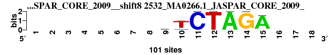 |
0.757 |
0.482 |
7.967 |
0.486 |
0.854 |
2.095 |
0.850 |
16 |
8 |
1 |
4 |
16 |
15 |
16 |
10.857 |
14 |
; dyads_m4 versus 2532_MA0266.1_JASPAR_CORE_2009_; m=14/16; ncol2=7; w=7; offset=1; strand=D; shift=8; score=10.8571; --------sTCTAGA---
; cor=0.757; Ncor=0.482; logoDP=7.967; NIcor=0.486; NsEucl=0.854; SSD=2.095; NSW=0.850; rcor=16; rNcor=8; rlogoDP=1; rNIcor=4; rNsEucl=16; rSSD=15; rNSW=16; rank_mean=10.857; match_rank=14
a 0 0 0 0 0 0 0 0 18 9 0 0 100 0 95 0 0 0
c 0 0 0 0 0 0 0 0 39 9 100 0 0 0 2 0 0 0
g 0 0 0 0 0 0 0 0 25 2 0 0 0 100 2 0 0 0
t 0 0 0 0 0 0 0 0 18 80 0 100 0 0 2 0 0 0
|
| 2487_MA0098.1_JASPAR_CORE_2009__shift7 (2487_MA0098.1_JASPAR_CORE_2009_) |
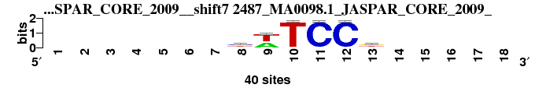 |
0.761 |
0.415 |
5.191 |
0.426 |
0.863 |
1.355 |
0.887 |
15 |
15 |
8 |
6 |
13 |
7 |
13 |
11.000 |
15 |
; dyads_m4 versus 2487_MA0098.1_JASPAR_CORE_2009_; m=15/16; ncol2=6; w=6; offset=0; strand=D; shift=7; score= 11; -------ywTCCk-----
; cor=0.761; Ncor=0.415; logoDP=5.191; NIcor=0.426; NsEucl=0.863; SSD=1.355; NSW=0.887; rcor=15; rNcor=15; rlogoDP=8; rNIcor=6; rNsEucl=13; rSSD=7; rNSW=13; rank_mean=11.000; match_rank=15
a 0 0 0 0 0 0 0 4 17 0 0 0 5 0 0 0 0 0
c 0 0 0 0 0 0 0 16 0 1 39 39 3 0 0 0 0 0
g 0 0 0 0 0 0 0 4 0 0 1 0 17 0 0 0 0 0
t 0 0 0 0 0 0 0 16 23 39 0 1 15 0 0 0 0 0
|
| 2362_CN0199.1_JASPAR_CORE_2009__rc_shift0 (2362_CN0199.1_JASPAR_CORE_2009__rc) |
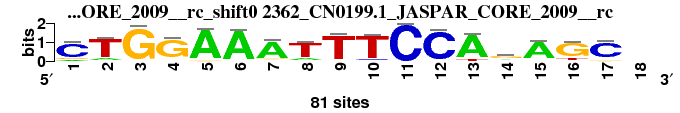 |
0.775 |
0.431 |
0.369 |
-0.146 |
0.896 |
2.173 |
0.891 |
13 |
11 |
13 |
16 |
7 |
16 |
12 |
12.571 |
16 |
; dyads_m4 versus 2362_CN0199.1_JASPAR_CORE_2009__rc; m=16/16; ncol2=17; w=10; offset=-7; strand=R; shift=0; score=12.5714; CTGGAAATTTCCAgAGC-
; cor=0.775; Ncor=0.431; logoDP=0.369; NIcor=-0.146; NsEucl=0.896; SSD=2.173; NSW=0.891; rcor=13; rNcor=11; rlogoDP=13; rNIcor=16; rNsEucl=7; rSSD=16; rNSW=12; rank_mean=12.571; match_rank=16
a 8 11 1 6 77 77 68 14 1 0 0 3 71 19 68 2 7 0
c 64 2 0 1 0 2 2 4 2 5 81 77 0 10 3 1 66 0
g 9 0 80 70 4 2 7 0 4 3 0 1 0 45 5 63 7 0
t 0 68 0 4 0 0 4 63 74 73 0 0 10 7 5 15 1 0
|
{kind=link}
{kind=link}
{kind=link}
{kind=link}
{kind=link}
{kind=link}
{kind=link}
{kind=link}
{kind=link}
{kind=link}
{kind=link}
{kind=link}
{kind=link}
{kind=link}
{kind=link}
{kind=link}
{kind=link}